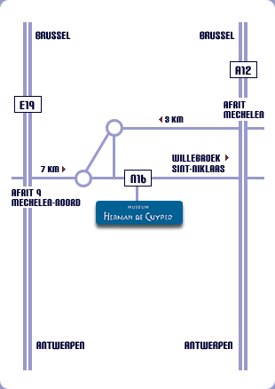

Adresse & Accès
Musée Herman De CuyperMechelsesteenweg 249
B-2830 Blaasveld (Willebroek)
Belgique
Téléphone : +32 (0)3 294 50 85
E-mail : info@museumhermandecuyper.be
Conservateur : Chris De Cuyper Voir sur la carte →
Heures d'ouverture & Tarifs
- Ouverture
- Du lundi au dimanche, 10h00 – 18h00
- Fermé
- Les jours fériés
- Entrée
- Gratuite pour les visiteurs individuels
- Groupes
- Visites guidées : 60 euros
En bus :
Ligne 286 Mechelen–Willebroek–Boom
Ligne 287 Mechelen–Heindonk–Willebroek
(arrêt Hinxelaar)
Nous contacter
Questions & Réactions
Je souhaite éventuellement acquérir un ouvrage
Envoyer un e-mail →Je possède une œuvre originale de Herman De Cuyper
Vous possédez une œuvre et souhaitez plus d'informations ou la faire enregistrer ?
Envoyer un e-mail →Plan d'accès
